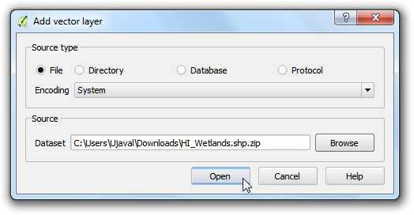
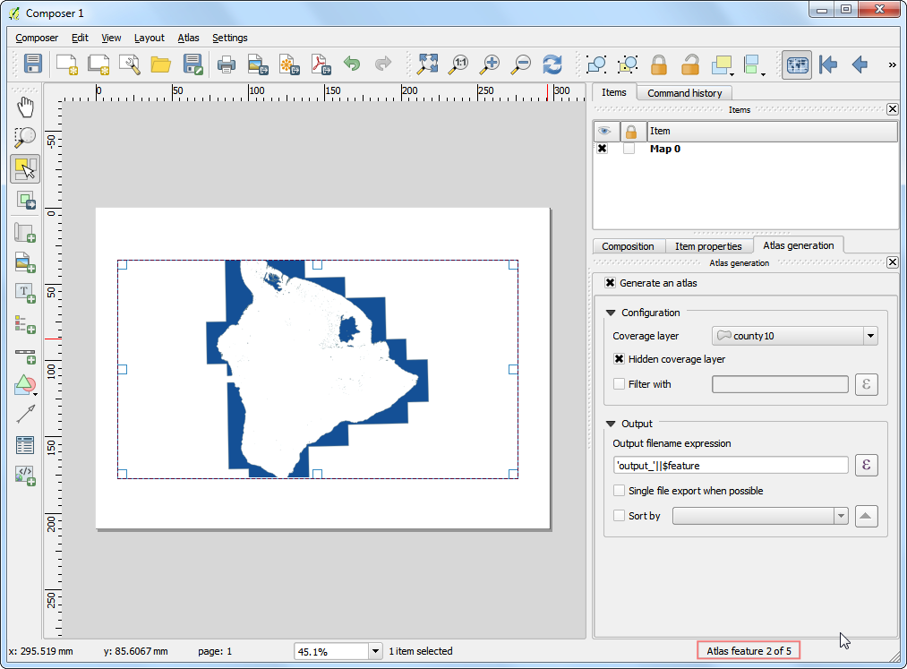

Automatizarea Creării Hărților cu ajutorul Atlasului Compozitorului de Hărți
[ Download PDF A4 Letter ]
Dacă organizația dvs. publică hărți imprimate sau online, apare adesea nevoia de a crea o serie de hărți pe baza aceluiași șablon - de obicei câte unul pentru fiecare unitate administrativă sau regiune de interes. Crearea manuală a acestor hărți poate dura o lungă perioadă de timp, iar dacă acestea trebuie să fie actualizate în mod regulat, atunci totul se poate transforma într-o adevărată corvoadă. QGIS dispune de un instrument numit Atlas care vă poate ajuta să creați un șablon, pe baza căruia să publicați cu ușurință un număr mare de hărți, pentru diferite regiuni geografice. Dacă nu sunteți familiarizați cu elementele de bază ale Compozitorului de Hărți, puteți parcurge tutorialul Crearea unei Hărți.
Privire de ansamblu asupra activității
Acest tutorial vă arată cum să creați harta zonelor mlăștinoase pentru fiecare regiune din statul Hawaii.
Alte competențe pe care le veți dobândi
Cum se utilizează stilul de randare Poligoane Inversate, pentru a umple zonele din afara poligoanelor.
Cum să utilizați o expresie din stilul de randare Bazat pe Reguli, pentru a arăta numai entitatea curentă din Atlas.
Aplicarea expresiilor, pentru a crea etichete dinamice în Compozitorul de Hărți.
Procedura
Lansați QGIS și mergeți la .

Navigați la fișierul HI_Wetlands.shp.zip, apoi faceți clic pe Open.

Selectați stratul HI_Wetlands_Poly, apoi faceți clic pe OK.

Veți vedea poligoanele care reprezintă zonele umede din întregul stat Hawaii. Din moment ce dorim să creăm hărți separate ale zonelor umede pentru fiecare ținut din stat, vom avea nevoie de stratul cu granițele ținuturilor. Mergeți la și navigați la fișierul county10.shp.zip. Clic Deschidere.

Mergeți la .

Lăsați gol câmpul titlu al compozitorului, apoi faceți clic pe OK.

Mergeți la .

Desenați un dreptunghi, ținând apăsat butonul stâng al mouse-ului, în zona în care se dorește inserarea hărții.

În partea de jos a filei Proprietăți Element bifați caseta Controlat de atlas. Aceasta va indica compozitorului că întinderea hărții afișate în această hartă va fi determinată de instrumentul Atlas.

Mergeți în fila Generare Atlas. Bifați caseta Generează un atlas. Selectați county10 ca și Strat de acoperire. Acest lucru va indica faptul că dorim să creăm 1 hartă, pentru fiecare entitate poligonală din stratul county10. Puteți bifa, de asemenea, Strat de acoperire ascuns, astfel încât entitățile să nu apară pe hartă.

Observați că imaginea hărții nu se schimbă după configurarea setărilor Atlasului. Mergeți la .

Acum, veți vedea harta reîmprospătându-se, pzezentându-vă modul în care va arăta o hartă individuală. Observați că în partea din dreapta-jos se arată numărul curent al entităților din stratul de acoperire.

Aveți posibilitatea să examinați modul în care va arăta harta pentru fiecare dintre poligoanele ținuturilor. Mergeți la .

Atlasul va randa harta, până la extinderea următoarei entități din stratul de acoperire.

Haideți să adăugăm o etichetă pe hartă. Mergeți la .

În fila Item properties, faceți clic pe butonul Inserare expresie....

Eticheta hărții poate folosi atributele din stratul de acoperire. Funcția concat este folosită pentru a uni mai multe elemente de text într-unul singur. În acest caz, vom alipi valoarea atributului NAME10 la stratul county10 cu textul County of. Adăugați o expresie ca mai jos, apoi faceți clic pe OK.
concat('County of ', "NAME10")
Stabiliți dimensiunea fontului după plac.

Adăugați o etichetă și introduceți Harta Zonelor Umede sub Proprietățile principale. Deoarece nu există nici o expresie aici, acest text va rămâne același pe toate hărțile.

Mergeți la și verificați dacă etichetele hărții funcționează așa cum este prevăzut. Veți observa că harta zonelor umede are poligoane care se extind în ocean, ceea ce arată urât. Putem schimba stilul acelor zonelor, pentru a le ascunde.

Să mergem în fereastra principală a QGIS. Clic-dreapta pe stratul county10, apoi selectați Properties.

În fila Stil, selectați renderul Inverted polygons. Acest render stilizează exteriorul poligonului - nu interiorul. Alegeți culoarea albă pentru umplere, apoi faceți clic pe OK.

Comutați la fereastra Compozitorului de Hărți. Dacă vreți să observați efectul de inversare a poligoanelor, trebuie debifată caseta Strat de Acoperire Ascuns de sub Generare Atlas. Veți vedea că imaginea randată este curată acum, iar zonele din afara poligonului de acoperire nu sunt vizibile.

Există o problemă, totuși. Puteți observa zone ale hărții, din afara limitei stratului de acoperire, care sunt încă vizibile. Acest lucru se datorează faptului că Atlasul nu ascunde în mod automat alte entități. Acest lucru poate fi util în unele cazuri, dar pentru scopul nostru, vrem să arătăm doar zonele umede ale ținutului pentru care se generează harta. Pentru a remedia acest lucru, reveniți la fereastra principală a QGIS și faceți clic-dreapta pe stratul county10, apoi selectați Proprietăți.

În fila Style, selectați renderul Rule-based ca și Sub render. Dublu-clic pe zona de sub Regulă.

Clic pe butonul ... de lângă Filter.

În Constructorul de expresii, extindeți grupul de funcții Atlas. Funcția $atlasfeatureid va returna entitatea selectată în prezent. Vom construi o expresie care va alege numai entitatea selectată în mod curent în Atlas. Introduceți expresia de mai jos:

Înapoi, în fereastra Compozitorului de Hărți, faceți clic pe butonul Actualizarea previzualizării din fila Proprietățile itemului, pentru a vedea modificările. Observați că acum este afișată numai zona care acoperă limita ținutului.

Vom adăuga o altă etichetă dinamică pentru a afișa data curentă. Mergeți la și selectați zona de pe hartă. Faceți clic pe butonul Inserați o expresie.

Extindeți grupul de funcții Date and Time și căutați funcția $now. Aceasta returnează ora sistemului actual. Funcția todate() o va converti într-un șir. Introduceți expresia de mai jos:
concat('Created on: ', todate($now))

Adăugați o altă etichetă, citând sursa de date. Puteți adăuga, de asemenea, alte elemente, cum ar fi o săgeată indicând nordul hărții, scara grafică etc., așa cum se descrie în tutorialul Crearea unei Hărți.

Odată ce vă place aspectul hărții, mergeți la .

Selectați un director de pe calculatorul dumneavoastră și faceți clic pe Choose.

Instrumentul Atlas va parcurge fiecare element din stratul de acoperire și va crea imagini separate ale hărții, pe baza modelului creat. Puteți vedea imaginile în director, o dată ce procesul s-a încheiat.

Aici sunt imaginile de referință ale hărții.